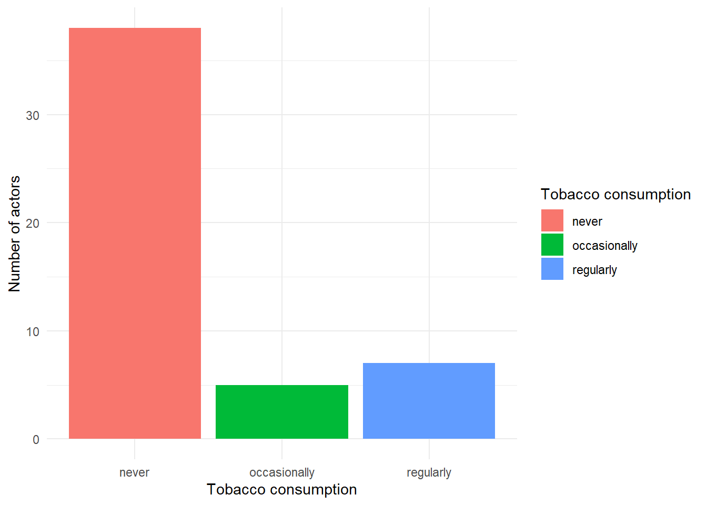
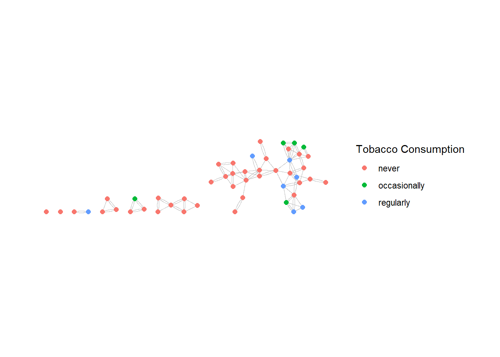
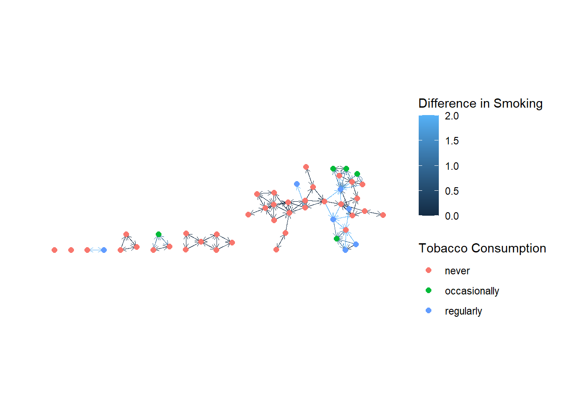
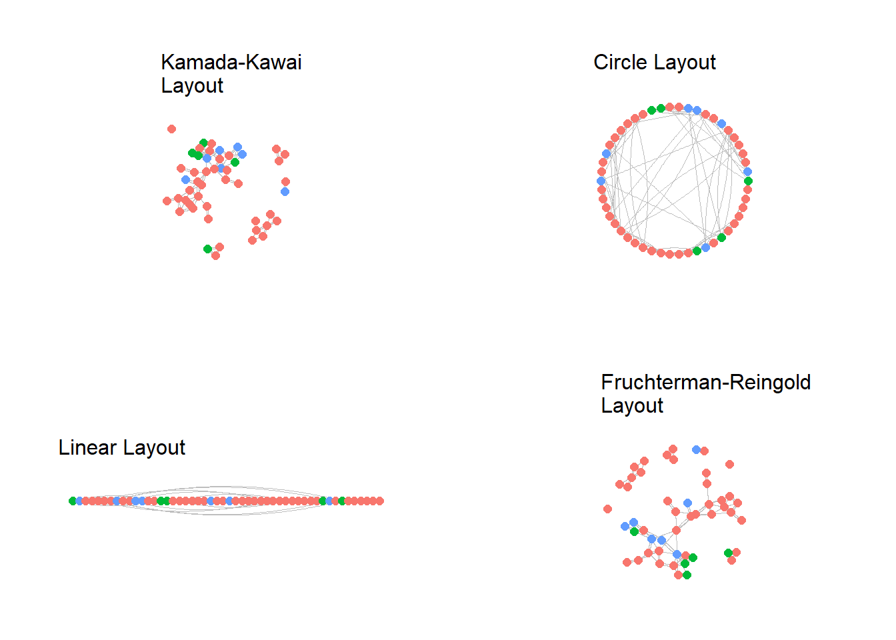

rm(list = ls())
ifelse(!require(igraph), # check whether igraph is not yet installed (!require(igraph) is TRUE when it is not)
(install.packages("igraph", dep = T) & require(igraph)), # if the test is true (= igraph is not yet installed), install it and then load it
require(igraph)) # if the test is false (igraph is already installed), simply load it)
ifelse(!require(tidyverse), (install.packages("tidyverse", dep = T) & require(tidyverse)), require(tidyverse))
# installing tidygraph and ggraph
ifelse(!require(tidygraph), (install.packages("tidygraph", dep = T) & require(tidygraph)), require(tidygraph))
ifelse(!require(ggraph), (install.packages("ggraph", dep = T) & require(ggraph)), require(ggraph))
# for plotting side by side
ifelse(!require(gridExtra), (install.packages("gridExtra", dep = T) & require(gridExtra)), require(gridExtra))Network visualization with tidygraph and ggraph
Loading our packages
if a package has already been installed, installing it again requires unncecessary time. Thus, the following ifelse funciton checks whether a package has already been installed and only installs it if it has not yet been. It then loads the package
Preparing our data
The data we use stem from the Teenage Friends and Lifestyle Study (Bush, West & Michell 1997, Michell and West 1996, Pearson and Michell 2000, Pearson and West 2003). It was conducted from 1995 to 1997 in Glasgow and followed students in one school from their second to their fourth year of secondary school. A particular focus of the study was on attitudes towards smoking and smoking behaviour. We will use this data a lot throughout the next weeks.
Loading the friendship matrices
There are three matrices, one for each measurement point (2nd, 3rd, 4th year of secondary school). Each matrix contains n = 160 rows and colums, one for each students participating in the study. The values signify a relationship between ego (row) and alter (column) as reported by ego. 0 means no tie, 1 stands for best friends, 2 for just friends and 10 for structural zero (i.e., at least one of the involved students was not yet part of the school cohort). In the following, we will create one friendship matrice per wave from this data containing all friends and best friends.
load("data/Glasgow_data/Glasgow-data_prepared.RData")
# load the data
load(file = "data/Glasgow_data/Glasgow-friendship.RData")
# recode the structural zero's to NA
friendship.1[friendship.1 == 10] <- NA
friendship.2[friendship.2 == 10] <- NA
friendship.3[friendship.3 == 10] <- NA
# recode all friends to 1 (same as best friends) for the "just friends" matrices
friendmat_1 <- friendship.1
friendmat_1[friendmat_1 == 2] <- 1
friendmat_2 <- friendship.2
friendmat_2[friendmat_2 == 2] <- 1
friendmat_3 <- friendship.3
friendmat_3[friendmat_3 == 2] <- 1
# store the "just friends" matrices as a named list
friendmats <- list("wave_1" = friendmat_1,
"wave_2" = friendmat_2,
"wave_3" = friendmat_3)Create subset of the data for improved visibility in plotting
There is a subset containing just 50 female students from the data which is easier to visualize. We’ll create matrices and data frames containing only the reduced data in the following. Gender becomes an irrelevant category in the reduced data as there is no variance!
friends <- list("wave_1" = friendmats$wave_1[dat$idstud, dat$idstud], # only keep those rows and colums
"wave_2" = friendmats$wave_2[dat$idstud, dat$idstud], # for which there is an id in dat
"wave_3" = friendmats$wave_3[dat$idstud, dat$idstud])Save data
Now, to save our progress, we need to store the new data frame and the lists of matrices in a file, so we do not need to do the process of data cleaning every time we analyse the data.
save(dat,
friends,
file = "data/Glasgow_data/glasgow_data.RData")Creating a Tidygraph Network
tidygraph offers a different type of graph objects. Objects created with igraph need to be converted to tidygraph objects first:
# creating our igraph object
graph1 <- graph_from_adjacency_matrix(adjmatrix = friends$wave_1)
# converting it to tidygraph
tgraph <- as_tbl_graph(graph1)
tgraph# A tbl_graph: 50 nodes and 117 edges
#
# A directed simple graph with 7 components
#
# A tibble: 50 × 1
name
<chr>
1 s001
2 s003
3 s007
4 s011
5 s012
6 s013
# ℹ 44 more rows
#
# A tibble: 117 × 2
from to
<int> <int>
1 1 11
2 1 14
3 2 7
# ℹ 114 more rowsWhat tidygraph does, is that it stores all the relevant information in two tibbles which are tidyverse’s version of data frames. The vertex attributes (in the tibble, where currently only “name” is given), as well as the edges as an adjacency list (and if existant, all edge attributes in the adjacency list).
To run tidyverse or dplyr actions on the tibbles, we first need to tell tidygraph which dataframe (nodes or edges) it should work on. We do this with activate(nodes) and activate(edges) respectively.
Let’s add information on the actors to the object:
Alcohol consumption: We want to create a factor of the following levels:
- 1: none,
- 2: seldomly,
- 3: once a month,
- 4 once a weak,
- 5: more than once a weak
Smoking (tobacco):
- 1: never,
- 2: occasionally,
- 3: regularly
Smoking (cannabis):
- 1: never,
- 2: tried it once,
- 3: occasionally,
- 4: regularly
tgraph <- tgraph %>%
activate(nodes) %>%
mutate(age = dat$age, # age of the actors
gender = factor(dat$male, # gender (male / female)
levels = c(0, 1),
labels = c("female",
"male")),
alcohol = factor(dat$alc_1, # alcohol consumption
levels = c(1:5),
labels = c("never",
"seldomly",
"once a month",
"once a weak",
"multiple times a week")),
tobacco = factor(dat$tob_1, # tobacco consumption
levels = c(1:3),
labels = c("never",
"occasionally",
"regularly")),
weed = factor(dat$weed_1, # cannabis consumption
levels = c(1:4),
labels = c("never",
"tried once",
"occasionally",
"regularly")),
pocketmon = dat$money_1, # pocket money in pounds per week
single = factor(dat$relationship_1, # is the person in a relationship?
levels = c(1, 0),
labels = c("in relationship",
"single")),
family_smoking = dat$smoking_at_home) # are the parents or siblings smoking at home?
tgraph# A tbl_graph: 50 nodes and 117 edges
#
# A directed simple graph with 7 components
#
# A tibble: 50 × 9
name age gender alcohol tobacco weed pocketmon single family_smoking
<chr> <dbl> <fct> <fct> <fct> <fct> <dbl> <fct> <dbl>
1 s001 13.3 female once a month occasio… never 6.2 single 0
2 s003 13.7 female seldomly regular… trie… 8 in re… 1
3 s007 13.5 female seldomly never never 5 single 1
4 s011 13.4 female seldomly never never 3.5 single 0
5 s012 13 female once a month never never 6 single 0
6 s013 13.6 female once a weak never never 5 single 0
# ℹ 44 more rows
#
# A tibble: 117 × 2
from to
<int> <int>
1 1 11
2 1 14
3 2 7
# ℹ 114 more rowsWe can now also use the objects in our node - dataframe to plot them:
( # the brackets around the object call the saved object "smoking_plot"
smoking_plot <- # saves the plot in the object "smoking_plot"
tgraph %>% # calls the tidygraph object "tgraph"
activate(nodes) %>% # activate the nodes
as_tibble() %>% # as a tibble
ggplot() + # forward it all to ggplot()
geom_bar(aes(x = tobacco, # create a colored bar plot of the smoking behaviour
fill = tobacco)) +
theme_minimal() + # using the minimal theme of ggplot
labs(x = "Tobacco consumption", # add labels
y = "Number of actors",
fill = "Tobacco consumption")
)
Network plotting
Many geoms for network plotting exist. The manual of ggraph has a comprehensive list of them: ggraph Manual.
(networkplot <-
tgraph %>%
ggraph(layout = "stress") + # use the stress layout
geom_edge_fan(width = .2, # color the edges gray and use the "fan geom"
color = "gray") +
geom_node_point(aes(color = tobacco),
size = 2 )+ # color the nodes by the tobacco consumption
coord_fixed() +
theme_graph() +
labs(color = "Tobacco Consumption")
)
As we see, if we use the fan-geom for the edges, by default, they are not directed and rather, two edges appear if a relationship is reciprocal. Let’s change that. For that, we need to use another geom: geom_edge_link
(networkplot <-
tgraph %>%
ggraph(layout = "stress") + # use the stress layout
geom_edge_link(width = .2, # color the edges gray
color = "gray",
arrow = arrow(length = unit(1.5, 'mm')), # determine the size of the arrow head
end_cap = circle(0.5, 'mm')) + # determine the distance between the arrow head and the node it is pointing to
geom_node_point(aes(color = tobacco),
size = 2 )+ # color the nodes by the tobacco consumption
coord_fixed() +
theme_graph() +
labs(color = "Tobacco Consumption")
)Let’s assume, we want to color the edges indicating whether they are between actors with the same smoking behavior or between dissimilar actors:
(networkplot <-
tgraph %>%
activate(edges) %>%
mutate(smoking_diff = abs(as.numeric(.N()$tobacco[from]) - as.numeric(.N()$tobacco[to]))) %>%
ggraph(layout = "stress") + # use the stress layout
geom_edge_link(width = .2, # color the edges gray
aes(color = smoking_diff),
arrow = arrow(length = unit(1.5, 'mm')),
end_cap = circle(0.5, 'mm')) +
geom_node_point(aes(color = tobacco),
size = 2 )+ # color the nodes by the tobacco consumption
coord_fixed() +
theme_graph() +
labs(color = "Tobacco Consumption",
edge_color = "Difference in Smoking")
)
What happened here is the following: we activated the edges, thus we went into the edges data.frame. Then, by calling .N()$tobacco, we called the node data.frame. The [from] and [to] options refer to the tie sender and receiver, respectively. as.numeric is used to convert the factor tobacco to numeric. .N()$tobacco[from] thus searches for the smoking behavior of the sender, for instance. abs(as.numeric(.N()$tobacco[from]) - as.numeric(.N()$tobacco[to])) lets ggraph calculate the absolute difference in the numerical values of the smoking behavior of the sender and receiver. This attribute is then used to color the nodes.
Layouts
ggraph has a large number of layout algorithms. By default, it automatically picks a layout most suitable (in the algorithms perspective) for the network. Some of them can be seen below:
Note: Most of the time, we will be using the layouts kk, stress, fr, or the automatic layout.
plot_kk <-
tgraph %>%
ggraph(layout = "kk") + # use the kk layout
geom_edge_fan(width = .2, # color the edges gray
color = "gray") +
geom_node_point(aes(color = tobacco),
size = 2 )+ # color the nodes by the tobacco consumption
coord_fixed() +
theme_graph() +
labs(subtitle = "Kamada-Kawai\nLayout") +
theme(legend.position = "none")
plot_circle <-
tgraph %>%
ggraph(layout = "circle") + # use the cirle layout
geom_edge_fan(width = .2, # color the edges gray
color = "gray") +
geom_node_point(aes(color = tobacco),
size = 2 )+ # color the nodes by the tobacco consumption
coord_fixed() +
theme_graph() +
labs(subtitle = "Circle Layout")+
theme(legend.position = "none")
plot_linear <-
tgraph %>%
ggraph(layout = "linear") + # use the linear layout
geom_edge_fan(width = .2, # color the edges gray
color = "gray") +
geom_node_point(aes(color = tobacco),
size = 2 )+ # color the nodes by the tobacco consumption
coord_fixed() +
theme_graph() +
labs(subtitle = "Linear Layout")+
theme(legend.position = "none")
plot_fr <-
tgraph %>%
ggraph(layout = "fr") + # use the fr layout
geom_edge_fan(width = .2, # color the edges gray
color = "gray") +
geom_node_point(aes(color = tobacco),
size = 2 )+ # color the nodes by the tobacco consumption
coord_fixed() +
theme_graph() +
labs(subtitle = "Fruchterman-Reingold\nLayout")+
theme(legend.position = "none")
# plot those four plots side by side:
grid.arrange(plot_kk,
plot_circle,
plot_linear,
plot_fr,
ncol = 2,
nrow = 2)
Exercises
These exercises are not homework, so they will not be presented in class. I will upload solutions to them to Moodle so you can check your solutions / get the correct answers. If you run into problems, feel free to ask me in the normal sessions, we can then discuss the problems in or after class.
Install the package “igraphdata” and load it. Then execute the command data("karate"). This loads data on the interactions among the club members of a university karate club in the early 1970s. The data have been studied by Wayne W. Zachary and are known as Zachary’s karate club.
- Convert the graph
karateinto a tidygraph object. - Plot the network using ggraph.
- Display the node attribute faction.
- “Mr Hi” and “John A” were the two instructors of the club. Change their shapes to be different from the participants.
- Display the edge attribute weight.
- Add a legend and a title to the plot.
- Save the plot.
- Try to interpret the plot:
- Why are there different factions?
- What may have happened?
- How does the network structure help explain the factions?
- Look up the wikipedia article Zachary’s karate club on the study. Does it confirm your interpretation from 8.?